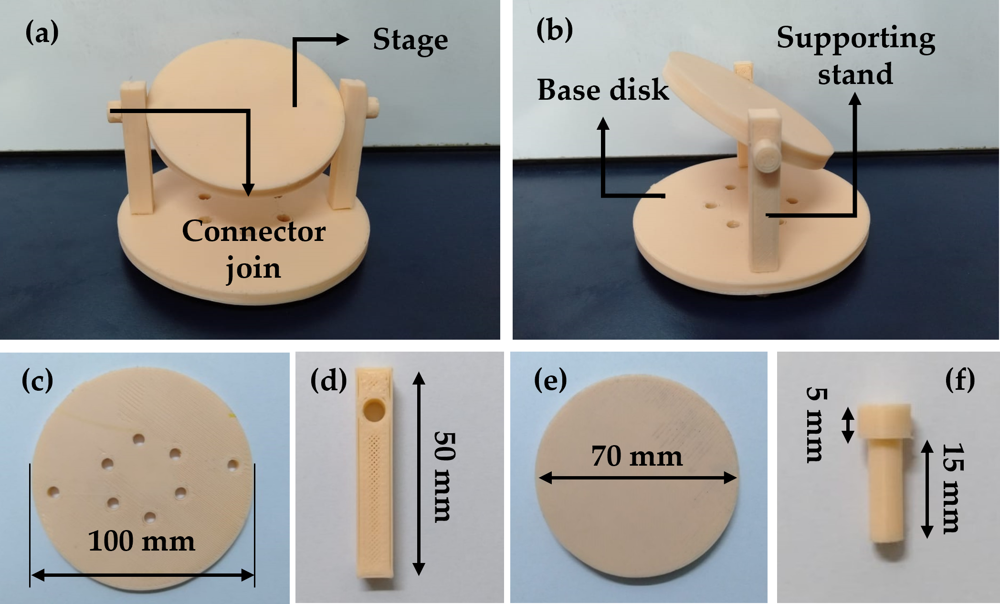

Experimental Setup
A setup was designed to hold and tilt the substrate. It comprises (b,c) base disk, (b,d) two supporting stands, (a,f) four connector joins, and (a,e) stage. All of these were fabricated using polylactic acid on a 3D printer (Ender 3, Creality, Shenzhen, China).
